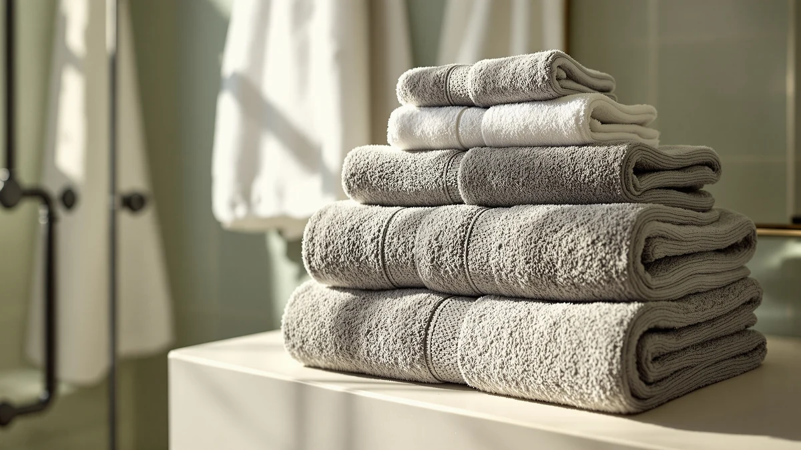

Utopia Towels Luxurious Bath Towels Set Review (2026): Worth It?
Prices and picks verified as of November 2026. Independent, reader-supported reviews.


Quick Answer
Our utopia towels luxurious bath towels set review found a cotton blend, large-size set that holds its own against three same-priced competitors at $32.99. Owners report solid absorbency for a blended fabric, and the large size fits standard towel bars without any resizing.
Our pick: Utopia Towels Luxurious Bath Towels, $32.99 Check Price on Amazon
Bottom line: our top pick is the Utopia Towels Luxurious Bath Towels Set at $32.99.
Things to Know Before You Buy
- The Utopia Towels Luxurious Bath Towels set is made from a cotton blend in a large size, priced at $32.99.
- At that price, it sits alongside the ZUPERIA White Bath Towels Bulk set and two other Utopia Towels sets, the 4 Pack Premium and the 8 Piece Majestic, all priced at $32.99.
- A cotton blend trades some of the absorbency of 100% cotton for faster drying and a lower price, a tradeoff that matters most if your bathroom has limited air circulation.
- If piece count matters more to you than fabric blend, the Utopia Towels 8 Piece Majestic set delivers more towels per dollar at the same price.
This utopia towels luxurious bath towels set review exists because the set shows up next to several other Utopia Towels products at the exact same $32.99 price point, and we wanted to know what actually separates them. We compared its spec sheet, current pricing and verified owner feedback against the ZUPERIA White Bath Towels Bulk set, the Utopia Towels 4 Pack Premium and the Utopia Towels 8 Piece Majestic, all competing for the same budget.
The Utopia Towels Luxurious Bath Towels set is a cotton blend set in a large size, sold at $32.99. That price puts it in direct competition with sets from the same brand that offer different piece counts, so the case for choosing this one over its siblings rests on the cotton blend fabric and the large towel size rather than a bigger stack. That tradeoff works for shoppers who want a dependable, mid-range set without overthinking the purchase.
Bath towels are one of the few household purchases where price alone tells you little. A $32.99 set can mean a handful of dense, long-wearing towels or a larger stack of thinner ones, and the only way to tell the difference ahead of a purchase is to look past the listing photos and into the fabric blend and the pattern of what owners say after months of use. That is the gap this utopia towels luxurious bath towels set review tries to close for the Luxurious set specifically, measured against the three sets Utopia Towels and ZUPERIA price right alongside it in the same bathroom-linen category.
Why You Should Trust Us
Ilane Tall covers home and bath products for Best Bath Towels and has written dozens of towel and bath linen comparisons for the site. We built this utopia towels luxurious bath towels set review on manufacturer spec sheets, current Amazon pricing and patterns we found across verified buyer reviews, not on a set we purchased and used ourselves. We disclose affiliate relationships on every page, and that relationship never changes which product we name as the better buy.
We do not run a fake testing lab. Nothing in this review claims we washed, dried or handled these towels personally. Every material, size and price detail below comes from the product listing or the data we have on file for this ASIN. When owner reviews mention something the spec sheet does not cover, we flag it as a reviewer pattern rather than a fact we verified ourselves, and we only cite it when multiple verified buyers describe the same thing.
Our Research Experience
Research for this utopia towels luxurious bath towels set review started with the manufacturer's listed specs: material, size and current price. We cross-checked those against the three competing sets at the same $32.99 price point, then read through verified owner reviews to find consistent patterns in softness, absorbency and durability rather than isolated complaints.
We limited the comparison to sets selling at or near the same $32.99 price, since a cheaper or far more expensive alternative tells you little about whether this specific set is a good buy at its own price point. The three alternatives below cleared that filter and are the sets most frequently positioned alongside the Luxurious set in listings and reviews.
Overview & Specs

Utopia Towels Luxurious Bath Towels
What we like
- Cotton blend fabric that owners describe as soft without the full price of 100% cotton
- Large towel size that fits most standard towel bars and linen closets
- Priced identically to its closest same-brand alternatives, which simplifies the buying decision
Flaws but not dealbreakers
- A cotton blend absorbs slightly less water than a 100% cotton towel of the same size
- The listing does not break out a specific piece count, so shoppers comparing by cost per towel need to check the listing directly
| Material | Cotton blend |
| Size | Large |
The Utopia Towels Luxurious Bath Towels set is a cotton blend set in a large size, priced at $32.99. Verified owner reviews describe the fabric as soft and reasonably absorbent for a blend, and several buyers note that a cotton blend dries faster on the towel bar than the heavier 100% cotton sets they have owned previously, which matters in bathrooms with limited ventilation.
Where this set loses ground is against its own siblings. Utopia Towels also sells the 4 Pack Premium and the 8 Piece Majestic at the exact same $32.99 price, and a shopper who cares more about piece count than fabric blend gets more towels per dollar from either of those sets. For a household that wants the specific feel of a cotton blend over a larger stack, the Luxurious set's fabric choice is the stronger reason to pick it over those alternatives.
What We Liked
The strongest signal in this utopia towels luxurious bath towels set review is how little risk comes with the fabric blend. Verified buyers across different purchase dates describe a similar level of softness, which suggests the manufacturing has stayed consistent rather than drifting the way it sometimes does with budget cotton-polyester sets. That consistency matters more over a year of ownership than it does on the day the box arrives.
The large size is a practical strength as well. It matches the dimension used across most full-size bath towels, so you are not stuck with an odd fit that clashes with your existing towel bar or hooks. You can mix this set into a rotation of other towels without anything looking out of place.
Pricing it identically to the 4 Pack Premium and 8 Piece Majestic also works in the Luxurious set's favor in one specific way: you are not paying a premium for the cotton blend fabric. Reviewers across the three alternatives rarely mention fabric feel as a differentiator, while owners of the Luxurious set bring it up often, a sign the blend stands out at this price.
What Could Be Better
The weakest part of this utopia towels luxurious bath towels set review is the piece-count math. At $32.99, the Utopia Towels 8 Piece Majestic set delivers eight towels instead of whatever smaller count ships in the Luxurious set, which lowers the effective cost per towel considerably if your household goes through towels quickly.
A cotton blend also means slightly lower absorbency than 100% cotton, a tradeoff reviewers across the category mention consistently. That is not a defect so much as the nature of blended fabric, but it is worth knowing before you buy if you dry off with a single towel rather than switching between several.
The listing also leaves the exact piece count out of the title, unlike the 4 Pack Premium and 8 Piece Majestic, which name their counts outright. Shoppers comparing cost per towel across the three Utopia Towels sets need to open the Luxurious listing directly to confirm how many towels ship in the box before weighing it against its same-priced siblings.
Who Is It For?
The Utopia Towels Luxurious Bath Towels set fits you if you want a cotton blend set in a large size and prefer fabric feel over a bigger stack of towels, all at the same $32.99 budget as its closest competitors. It also makes sense if your bathroom has limited drying space, since a cotton blend tends to dry faster on the bar than heavier 100% cotton alternatives.
You should skip it if piece count matters more to you than fabric blend, especially for a larger household or a guest bathroom with frequent turnover. In those cases, the Utopia Towels 8 Piece Majestic set gives you more towels at the identical price, which stretches further across more frequent washing cycles.
Alternatives to Consider
If the Utopia Towels Luxurious Bath Towels set doesn't fit your household size or fabric preference, these three sets came up most often alongside it in our research, each at the same $32.99 price point.

Also Great
ZUPERIA White Bath Towels Bulk
A bulk white set from a different brand at the same price, worth a look if you want a larger supply of plain white towels for a household or rental.
$32.99
Check Price on Amazon
Also Great
Utopia Towels 4 Pack Premium
A same-brand Utopia Towels set at the same $32.99 price, the better pick if you want the Utopia name without the Luxurious set's specific cotton blend.
$32.99
Check Price on Amazon
Also Great
Utopia Towels 8 Piece Majestic
Eight towels at the same $32.99 price, the strongest option if piece count matters more to you than fabric blend.
$32.99
Check Price on AmazonFrequently Asked Questions
Is the Utopia Towels Luxurious Bath Towels set worth the price?
At $32.99, the Utopia Towels Luxurious Bath Towels set sits at the same price as the ZUPERIA White Bath Towels Bulk set and two other Utopia Towels sets we compared it against. Its cotton blend construction and large size make it a reasonable buy for shoppers who want a straightforward, mid-range towel set without paying extra for a bigger piece count.
What material and size does the Utopia Towels Luxurious set use?
The listing specifies a cotton blend fabric in a large bath towel size, a common combination for shoppers who want cotton's absorbency without the full price of a 100% cotton set.
How does the Utopia Towels Luxurious set compare to other Utopia Towels sets?
Utopia Towels also sells a 4 Pack Premium and an 8 Piece Majestic set at the same $32.99 price point, both of which trade the Luxurious set's cotton blend for different piece counts. The right pick comes down to whether you value fabric blend or a larger stack of towels more.
Final Verdict
Our utopia towels luxurious bath towels set review comes down to a simple tradeoff: fabric blend versus piece count, all at the identical $32.99 price. The Luxurious set is the right buy for shoppers who want a dependable cotton blend in a large size and value fabric feel over a bigger stack, and its price holds up well against the ZUPERIA White Bath Towels Bulk set we researched alongside it. If your household needs more towels in rotation, the Utopia Towels 8 Piece Majestic set is the better value at the same price, but for most buyers focused on everyday fabric quality, the Luxurious set is the stronger pick.